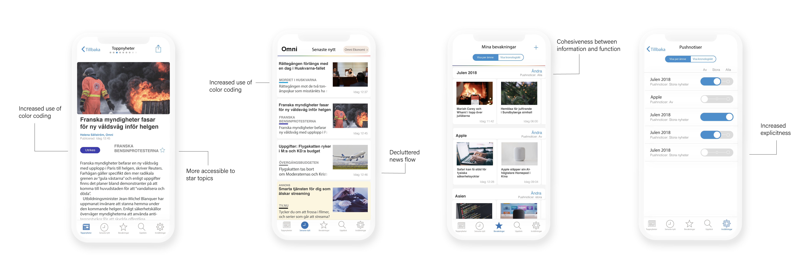

USABILITY TEST & REDESIGN
Filip Eliasson, Anna Jarebro, Annika Pålsson, Lisa Rooth, Lovisa Sköld
Usability 7,5hp
Chalmers University of Technology, Gothenburg
The scope
Evaluate the usability and redesign Omni's IOS app (late 2018 version) using both theoretical and empirical measures and based on the ISO-definition of usability (ISO 9241-11).
Theoretical methods
The project began with evaluating the usability of the existing app to map out potential problem areas. This was done with the following methods:
- Hierarchical task analysis (HTA
- Cognitive walkthrough (CW)
- Predictive Human Error Analysis (PHEA)
usability testing
From the theoretical problem areas defined, we conducted a usability test. During the test the users were given different tasks to complete. The interaction was recorded, scripted, and analyzed. The users also answered questions and made a semantic evaluation of the app, which we used together with the users click-data (Yes, we did count every click on those videos ourselves. And no, we didn’t use a plug-in for it).
Common difficulties
After analyzing the results, some common difficulties with the usability were found. Some of the most recurring problems were:
- Remove push notifications on topics you follow
- Understanding colorcoding
- Adjust push-settings
XD mock up
The next step was to create a redesign from the results and do a new round of usability testing. A mock-up was created with illustrator and XD and was tested with both between- and within-subjects.
MAIN CHANGES
hurray!
The redesign made the amount of users able to complete the given tasks increase from an average of 60% to 100%. It also lowered the number of clicks needed to perform the tasks.